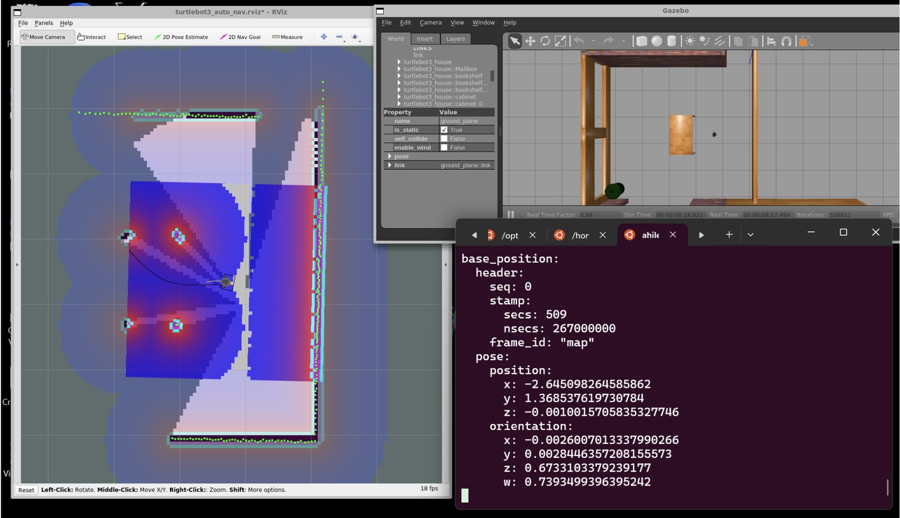
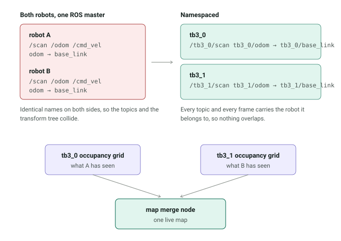

Two TurtleBot3 robots mapping and navigating the same environment under a shared ROS system. The goal was to let both robots localize independently while contributing to a shared occupancy map.
One robot first

I started with one TurtleBot3 and brought up the full SLAM and navigation stack in Gazebo. Before adding a second robot, I verified that mapping, localisation, costmaps and navigation were working together. This gave me a known-good single-robot setup to debug against later.
Then the second robot breaks it
Adding a second identical robot under the same ROS master introduced
intermittent failures. Both robots were publishing the same topic and
transform names — /scan, /odom and
base_link. The two data streams could interfere with each
other, and the transform trees were no longer unambiguous. The result was
localisation and navigation behaving as if a robot had moved somewhere it
had not.

The problem was not the SLAM algorithm itself. It was the way the two robots were sharing names inside ROS. I traced the failures to topic namespace and TF collisions, then restructured the launch files so each robot had its own namespace and transform tree. Relevant topics and TF frames were remapped accordingly, giving each robot an independent localisation and navigation stack.
Two maps into one
Separating the robots solved the interference problem, but it created a
new one. Each robot now maintained its own occupancy grid, covering the
part of the environment it had explored. I wrote a custom
map_merge node to combine the two occupancy grids and publish
a shared occupancy map, allowing both robots to contribute what they had
seen.
What I was actually debugging
The difficult part was not starting two robots. It was making the whole ROS system behave like one multi-robot system without making the robots behave like one robot. That meant isolating their topics and transform trees, keeping localisation independent, and then connecting the two resulting maps at the right level.